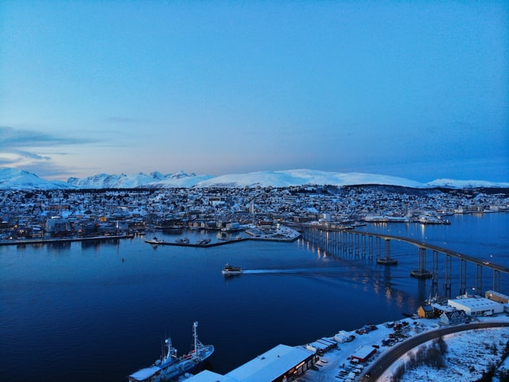

特隆瑟位於挪威北部，面積為2,521平方公里（973平方英里），在挪威422個城市中排名第18。特隆瑟人口總數75,638，在挪威名列第9位。該市人口密度為30.6名居民每平方公里（79名居民每平方英里），其人口在過去十年中增加了15.9％。[2][3] 特隆瑟是挪威北部最大城市區，也是北極圈內的第三大城市（緊隨摩爾曼斯克和諾里爾斯克）。特隆瑟包括城中心在內的的大部分地區位於北極圈以北350公里（217英里）的特隆瑟島。2017年，特隆瑟城擁有約65,000人口，分布在特隆瑟島、克瓦爾島及挪威大陸的部分地區。特隆瑟島通過特隆瑟大橋和Tromsøysund隧道與挪威大陸連通，通過Sandnessund橋與克瓦爾島連通。
「特羅姆瑟」(Tromso)是挪威北部的一座大學城，Tromso擁有75,000名居民是挪威北部最大城也是北極圈內第三大城市。城市具有悠久歷史卻也是許多挪威現代流行文化的發源地，讓Tromso擁有「北方巴黎」這樣響亮的名號。Tromso同時也是欣賞極光的聖地！甚至有人稱Tromso為「挪威極光首都」。這趟旅行我們建議在Tromso待四天三夜，您將必定會把這四天在Tromso的旅遊經驗整理而成一篇文章。文章中將會介紹Tromso不能錯過的代表性景點、必吃美食和參加極光團的經驗分享，希望能對計畫Tromso的旅人有所幫助。